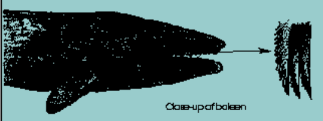

Gray Whale Feeding
Gray whales are huge animals. They grow to about 49 feet long and weigh about 90,000 pounds. It takes a lot of food to grow to that size. It also takes a lot of food for a full-grown whale to stay healthy.
To feed, a gray whale dives to the bottom and turns on its side. There it bites chunks out of the mud or sand. The buried small shrimp-like animals are stirred up into the water. The whale sucks this water mixture into its mouth. Forcing the water through through baleen plates strains out the animals.
Baleen is made from the same protein as your fingernails. The plates of baleen are connected to the gray whale's mouth. A baleen plate has long bristles that filter food from the sea water.
Gray whales actually seem to eat a variety of foods. Besides bottom animals, they sometimes feed on plankton. Other times they even strain seaweeds through their mouths to rub off crabs and shrimp. Scientists think their flexable feeding behavoir is important for their survival. It may have helped them recover quickly from near extinction. Other whales which eat fewer kinds of food have been slower to increase in numbers
